Research
Research Interests
My scientific research interests include the embedded systems (FPGA architectures, DSP systems, microprocessor systems, automation systems, specific purposed systems), image processing (image processing algorithms, image processing acceleration, image enhancement, low-level image processing, object tracking, face detection, color segmentation, image analysis), motion control (motion control algorithms, motion controllers, robotics, velocity profile generation, trajectory planning, open architecture systems, manufacturing systems), and system on a chip (image processing acceleration, video interface, motion control, high speed interface, memory interface, soft processor cores, IP cores).
Research Symmary
| Neural network Processing Units (NPUs) |
| - Designed system architectures of Neural network Processing Units (NPUs) in SoCs for UHD TVs. - Drove silicon prototyping utilizing FPGA platforms and demonstrated deep learning applications in custom FPGA boards. - Responsible for analyzing design spec, developing and implementing systems integrated for major design blocks. - Worked closely with application engineers in order to improve the performance of deep learning applications. |
| Video Processing Engines using Samsung Reconfiguralbe Processor (SRP) |
| - Designed hardware architectures based on multiple Samsung Reconfigurable Processors (SRPs) for video processing in SoCs for UHD TVs. - Verified the designs on simulators and FPGAs with video post-processing functions. - Designed and verified hardware IPs of 8K UHD display interface including video post-processing blocks in SoCs. - Cooperated with video application engineers to improve the performance of video processing applications. |
| Image Processing Engines using Samsung Reconfiguralbe Processor (SRP) |
| - Designed and verified hardware architectures based on SRP for image processing in SoCs for digital cameras. - Drove silicon prototyping utilizing FPGA platforms with multi-frame post-processing applications. - Developed post-processing applications and improved the performance of them using software pipeline and SIMD processing. - Developed SRP based programmable video Image Signal Processors (ISPs) qualified for Skype certification for webcams installed televisions. - Optimized the performance of them into the restricted system environments. |
| Color Classification System |
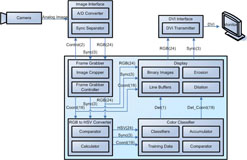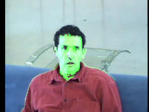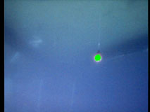 |
| - Developed an FPGA based real-time color classification system. - Created the color classifier offline by feeding the training images to AdaBoost. - Designed a RGB to HSV color space converter using Verilog HDL. - Designed a hardware architecture for increased performance of color classification using Verilog HDL. - Implemented a color classification system on a Virtex-5 FPGA which is capable of processing the image (640×480 pixels) at speeds up to 233 fps and has up to 598× performance gain over an equivalent software implementation. |
| Face Detection System Using Haar Classifiers |
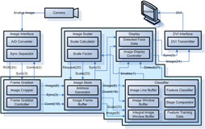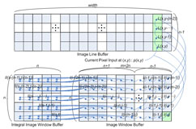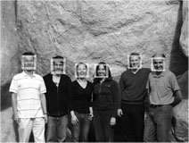 |
- Developed an FPGA based real-time face detection system. |
| Motion-Vision Integrated Embedded System |
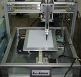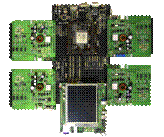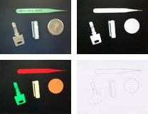 |
- Developed an FPGA and ARM based motion-vision integrated embedded system. |
| Visual Tracking System Using Adaptive Color Histograms |
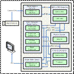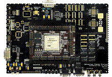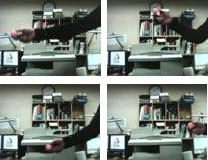 |
- Developed hardware acceleration of visual tracking using color histograms for intelligent robots. |
| Real-Time Active Visual Tracking System |
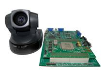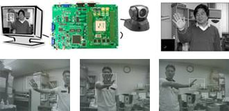 |
- Developed hardware acceleration of active visual tracking using projection profile matching and a particle filter for intelligent robots. |
| Real-Time Object Tracking System Using Particle Filters |
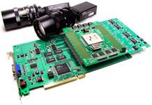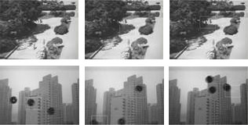 |
| - Developed hardware acceleration of multiple objects tracking using priority based probabilistic data association particle filters for intelligent robots. |
| Real-Time Histogram Equalization with Automatic Gain Control |
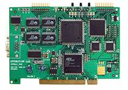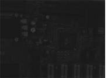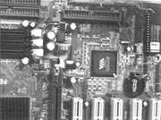 |
| - Developed hardware acceleration of histogram equalization with automatic gain control for image enhancement. |
| Multiple Axis Motion Control System |
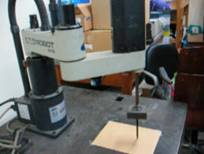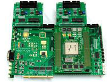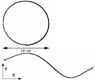 |
| - Developled FPGA based multiple axis motion control system for robotic manipulators. |
| Motion Control Chip to Generate Velocity Profiles of Desired Characteristics |
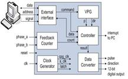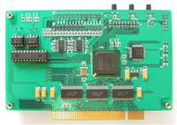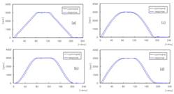 |
| - Developled FPGA based motion control chip to generate various velocity profiles for motors. |
| High Performance Motion Controller |
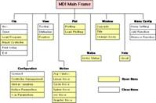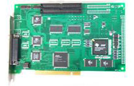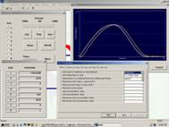 |
| - Designed an open architecture motion controller using a TMS320C6711 DSP. |
| Low-Cost Timing Controller for Inspecting Small Components |
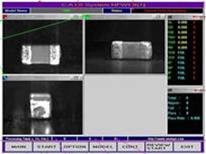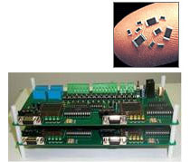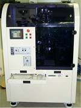 |
| - Designed a precision timing controller for MLCC inspection system using 80C196 microprocessors. - Developed a system which consists of dual microprocessors and its own memory and peripherals. Each processor performs its own task and communicates to each other. It can control precision timing to grab images, operate value, and detect sensors. It applied a real MLCC inspection system in industry. |
Accomplished Projects
[P1] High Performance Motion Controller (11/1999~10/200) : Development of Leading Technology Program funded by the Ministry of Commerce, Industry and Energy of Korea.
[P2] Synchronization System for High Speed Inspection of Small Components (05/2002~02/2003) : Technical Innovation for Small and Medium Business Program funded by the Small and Medium Business Administration of Korea.
[P3] Motion Control System for Step Motor (09/2002~08/2003) : Transformation of New Technology Program funded by the Ministry of Commerce, Industry and Energy of Korea.
[P4] Pentium Processor Based Embedded System (04/2003~03/2004) : Technical Innovation for Small and Medium Business Program funded by the Small and Medium Business Administration of Korea.
[P5] Automatic Frequency Control System for Parts Feeder (06/2003~02/2004) : Technical Innovation for Small and Medium Business Program funded by the Small and Medium Business Administration of Korea.
[P6] Intelligent SoC (System on a Chip) for Recognition/Learning Engine (10/2003~03/2005) : 21st Century Frontier R&D Program funded by the Ministry of Science and Technology and the Ministry of Commerce, Industry and Energy of Korea.
[P7] Embedded System for ECU (Electronic Control Unit) (08/2004~05/2009) : Next Generation Vehicle Technology Program funded by the Ministry of Commerce, Industry and Energy of Korea.
[P8] Precision Dispensing Control System for Next Generation LCD Manufacturing Equipment (04/2005~03/2006) : Technical Innovation for Small and Medium Business Program funded by the Small and Medium Business Administration of Korea.
[P9] Motion-Vision Integrated Embedded System (09/2005~08/2008) : Lab of Excellency Project funded by the Ministry of Education and Human Resources Development, the Ministry of Commerce, Industry and Energy, and the Ministry of Labor of Korea.
[P10] Nurturing Highly Qualified Human Resources (03/2006~12/2007) : Brain Korea 21 Project funded by the Ministry of Education and Human Resources Development of Korea.
[P11] Vision/Speech SoC (System on a Chip) (04/2006~03/2009) : 21st Century Frontier R&D Program funded by the Ministry of Commerce, Industry and Energy of Korea.